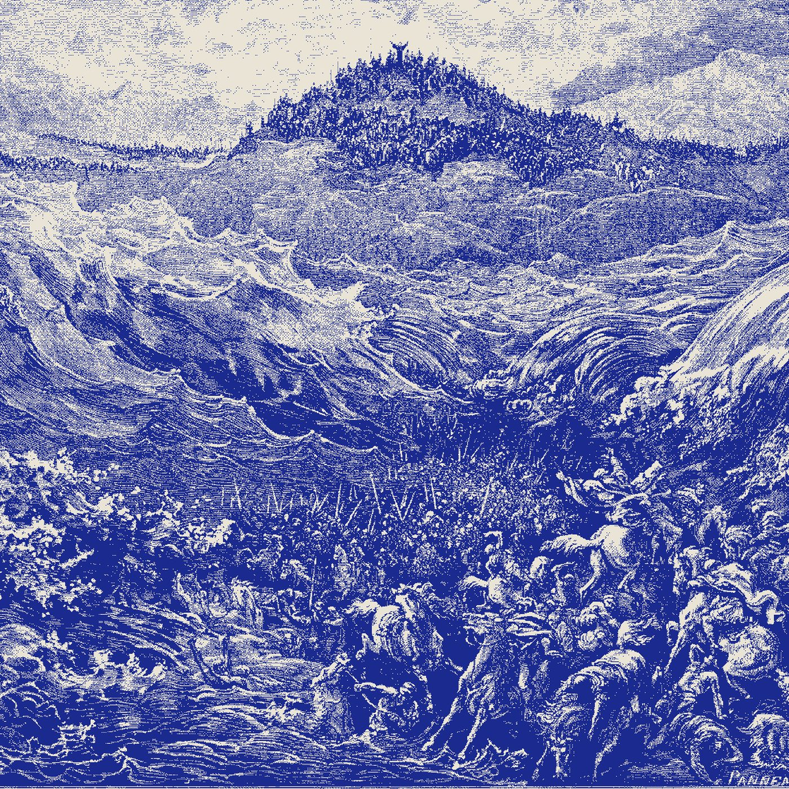

The RTX Spark Laptop Runs Local Models Four Times Slower on Linux
Nvidia's RTX Spark laptop is sold to people who want to run models on their own hardware. Under native Linux it appears to run them at roughly a fifth of the speed it manages on Windows.
The finding comes from one hands on report, so treat the exact numbers as claimed rather than settled. The author dual booted Linux on an MSI Prestige RTX Spark machine and benchmarked a 120 billion parameter open model. Windows reached 65.4 tokens per second, WSL 65.1, an Nvidia DGX Spark desktop 61, and native Linux on the same laptop 13.9. The gap is clock speed. Under wall power the GPU holds near 780 MHz on Linux where Windows lets it boost past 2 GHz, and the component that coordinates CPU and GPU power, the Nvidia Platform Controllers and Framework, has no Linux build. Its power table is encrypted and only the Windows driver reads it.
What it means for your hardware: the silicon is fine, the driver is missing. The laptop carries the same GPU design as the DGX Spark desktop, which ships with Nvidia's own Linux build and matched 61 tokens per second in the same test. For a Linux first toolchain like vLLM or SGLang, the practical route today is WSL, which rides the Windows driver stack and keeps boost. One more trap: the machine reserves 96 GB of unified memory for the GPU by default, and only the Windows side exposes the setting to change that split. Confirm the memory you think you have before you plan a model around it.
What is uncertain: whether this is a bug or a deliberate boundary. The discussion thread leans toward Nvidia simply not investing in Linux support for this hardware class, and some users floated reverse engineering the controller. Nothing has shipped. The one source here is a blog with a hands on test, not an independent lab, so the mechanism is plausible but unreproduced.
Three short items.
DwarfStar now streams Qwen3.8 Flash Next. The ds4 engine, until now a DeepSeek and GLM runner, merged support for Qwen3.8 Flash Next on Metal (PR #1056, merged November 3). The technique is the part worth borrowing: dense weights and shared experts stay resident while routed experts stream from SSD into a bounded cache, with reads overlapped against GPU work. It reads the existing Q2 and Q4 GGUF packs directly. Qwen3.8 Flash Next's smaller Q2 release is 41.73 GiB of main and MTP weights, so a 64 GB Mac holds it and smaller machines can stream it.
llama.cpp tagged v0.9.0. On November 4 the project cut a 0.9 release with OCP FP8 E4M3 quantization, a new flash_attn_ext_rows operation that keeps the unified KV cache efficient when serving many sequences at once, a batched tensor copy API, and NCCL based tensor parallelism across nodes. Four new architectures land too: Clover, Limite, Metis 1.6 and Mistral Large 4.
GPU prices keep climbing. Nvidia pulled the RTX 5080 from its own store after removing the 5090, and Tom's Hardware reports street prices for a 5090 at 2.2 times the suggested price, with another outlet citing figures above $9,000. If you are sizing a build, the consumer card math is the worst it has been this cycle.

The pattern across all three items is the same one the site keeps landing on: the compute is available, and the constraint keeps moving to memory, drivers and price. Plan for the second two.
Sources
- MindStudio, Linux on the Nvidia RTX Spark Laptop: What Actually Works, November 1, 2026.
- Hacker News discussion, Nvidia RTX Spark encrypted firmware slows inference speed on Linux, November 4, 2026.
- antirez/ds4 pull request #1056, Metal: add Qwen3.8 SSD expert streaming and optimize inference, merged November 3, 2026.
- antirez/ds4, SSD streaming notes.
- llama.cpp, Release v0.9.0, November 4, 2026.
- Tom's Hardware, Nvidia store pulls the RTX 5080 following RTX 5090 removal, street prices climb to 2.2x over MSRP, November 2026.
- Hacker News discussion on GPU pricing, Nvidia store pulls RTX 5080 following RTX 5090 removal, prices rise to 2.2X MSRP, November 4, 2026.